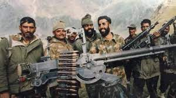
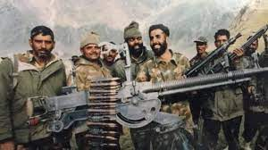

Vikram Batra
Captain Vikram Batra was an Indian Army officer.
 

Vikram Batra Early life.
Early Life
Batra was born on 9 September 1974, in a Punjabi Khatri family in a small town in Palampur, Himachal Pradesh. He was the third child of Girdhari Lal Batra, a government school principal, and Kamal Kanta Batra, a school teacher. He was the elder of twin sons, born fourteen minutes before his brother, Vishal. The twins were nicknamed: 'Luv' (Vikram) and 'Kush' (Vishal), after the twin sons of the Hindu deity Rama, by their mother who was a professed devotee of Rama.He had two sisters: Seema and Nutan.

"Either I will come back after hoisting the tricolour, or I will come back wrapped in it.”
As a young child, Batra received his primary education under the tutelage of his mother.He then attended the D.A.V. Public School in Palampur, where he studied up to middle standard. He received his senior secondary education at Central School in Palampur. Besides his academic endeavours, Batra also dabbled in a variety of sports at his school, which he represented at the national level during the Youth Parliamentary competitions in Delhi. He also represented his school and college in table tennis, Karate and other such sports. In 1990, he and his twin brother represented their school in table tennis at All India KVS Nationals. He also was a green belt holder in Karate and went on to attend a national level camp in Manali.
Further Education
After completing his Class XII board examinations in 1992 from Central School, he attended DAV College, Chandigarh in B.Sc Medical Sciences. At college, he joined the Air Wing of the National Cadet Corps (NCC) while he was in his first year. He afterward qualified for the 'C' certificate in the NCC and attained the rank of Senior Under Officer in his NCC unit. Subsequently, in 1994, he was selected and took part in the Republic Day parade as an NCC cadet, and when he came back home, he told his parents that he wanted to join the Army.His maternal grandfather was also a soldier in the Indian Army.In 1995, while still in college, he was selected for the merchant navy at a shipping company headquartered in Hong Kong, but ultimately he changed his mind, aspiring to do "something great, something extraordinary, which may bring fame to my country." That same year he completed his bachelor's degree, graduating from the DAV College in Chandigarh.
Military Career & Military Academy
Batra joined the Indian Military Academy (IMA) at Dehradun, in June 1996 in the Manekshaw Battalion.After completing his 19-month training course, he graduated from the IMA on 6 December 1997 and was commissioned as a lieutenant into the Indian Army.He was commissioned into the 13th battalion of the Jammu and Kashmir Rifles (13 JAK Rif). After commissioning, he was sent to Jabalpur, Madhya Pradesh for regimental training. The training lasted one month, from December 1997 to the end of January 1998. In January 1999, Batra was sent on a Commando Course at Belgaum, Karnataka. The course lasted for two months and at the end of it, he was awarded the highest grading — the Instructor's Grade.


Awards received
Vikram Batra was awarded the Param Vir Chakra, India's highest military honour on 15 August 1999, the 52nd anniversary of India's independence. His father G.L. Batra received the honour for his deceased son from the President of India, the late K. R. Narayanan
Vikram Batra's legacy.
Legacy
Vikram Batra is also well known in India for using the slogan; Yeh Dil Maange More! as his signal to communicate mission success. He is also known for an interview in which he stated that Pakistani soldiers were aware of him. He was also honoured with several landmarks being named after him: the historic capture of Point 4875 led to the mountain being named Batra Top in his honour. A hall at the Service Selection Centre Allahabad is named 'Vikram Batra Block', a residential area in the Jabalpur Cantonment is called 'Captain Vikram Batra Enclave' and the combined cadet's mess at the IMA is named 'Vikram Batra Mess'.